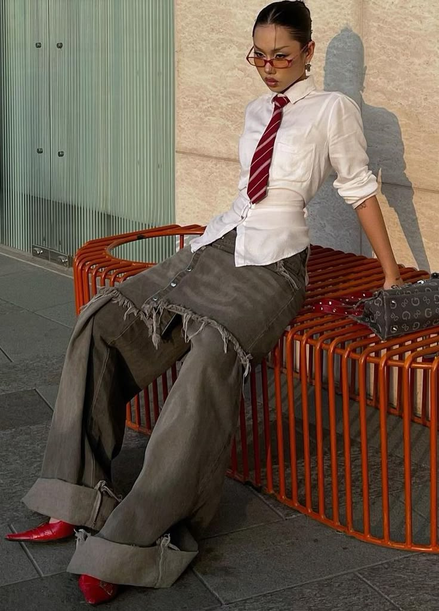
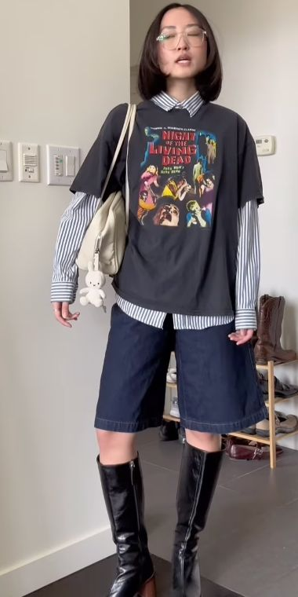

Vibrant Anime Fashion Inspired by the Best!
Jujutsu Kaisen-Inspired Look
This outfit combines bold blacks and golds inspired by *Jujutsu Kaisen*’s powerful characters like Gojo and Yuji. Perfect for a modern street look with an edge!
Hunter x Hunter-Inspired Look
Explore the adventurous style of *Hunter x Hunter*, with a mix of earthy tones and casual streetwear influenced by Gon and Killua's looks.
Solo Leveling-Inspired Look

*Solo Leveling* brings a futuristic, stylish vibe, with sleek black jackets and bold accents, capturing the essence of powerful hunters and their gear.